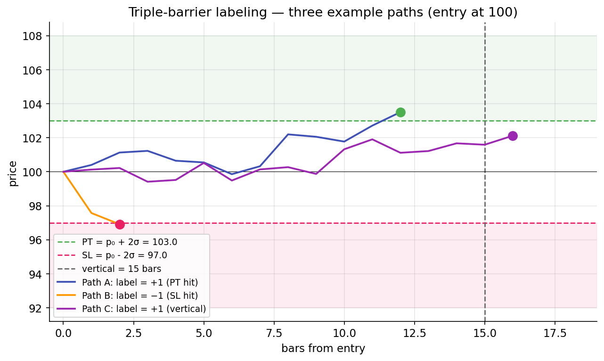

Three gates¶
Three gates. One up, one down, one in time. Whichever closes first, marks the trade.
The labeling problem requires events at specific times, labels that respect path dependence, and magnitudes comparable across regimes. Triple-barrier is the procedure that satisfies all three.
Three barriers, one label¶
At each event at time \(t_0\), draw three barriers:
- Upper barrier at price \(p_0 \cdot (1 + \text{pt\_mult} \cdot \sigma)\) — a profit-take.
- Lower barrier at price \(p_0 \cdot (1 - \text{sl\_mult} \cdot \sigma)\) — a stop-loss.
- Vertical barrier at time \(t_0 + \text{vertical\_bars}\) — a time stop.
Walk forward from \(t_0\), bar by bar. The first barrier the price touches determines the label:
- Upper hit first → label \(= +1\),
barrier_hit = "pt". - Lower hit first → label \(= -1\),
barrier_hit = "sl". - Vertical reached first → label \(= \text{sign}(r_\text{final})\),
barrier_hit = "vertical".
The label is always in \(\{-1, 0, +1\}\), with \(0\) possible only at the vertical barrier with exactly zero net return.

Why vol-scaling matters¶
Barriers are scaled by a rolling vol target \(\sigma\) rather than fixed dollar amounts. The upper barrier for an event at \(t_0\) is \(p_0 \cdot (1 + 2 \sigma_{t_0})\) when pt_mult = 2.0.
Two reasons.
-
Regime-comparable labels. In a low-vol regime (\(\sigma = 0.5\%\)), the 2σ barrier is at +1%. In a high-vol regime (\(\sigma = 3\%\)), the 2σ barrier is at +6%. A profit-take label of +1 answers the same question in both cases.
-
Prevents pathological outcomes. A fixed dollar barrier hits almost immediately in high-vol regimes and almost never in low-vol regimes. Neither extreme produces useful labels.
The rolling vol is afml.labeling.rolling_vol: EWM standard deviation of arithmetic returns with span=100 by default.
The side adjustment¶
Triple-barrier handles both long and short primary signals through a side parameter.
For a long signal (side = +1), the return series is \(p_t / p_0 - 1\). A rising price produces positive returns.
For a short signal (side = -1), the return series is multiplied by the side: \((p_t / p_0 - 1) \cdot \text{side} = -(p_t / p_0 - 1)\). A rising price now produces negative side-adjusted returns, correctly representing a losing short.
The output label uses the same sign convention regardless of side: \(+1\) indicates profitability. A profitable long and a profitable short both receive \(+1\). The label is direction-neutral.
Vertical barrier — edge cases¶
The vertical barrier caps holding period. Without it, an event might never hit either horizontal barrier in bounded time. Typically set to 5-20 bars for daily data.
At the vertical barrier: if the vertical is reached with positive realized return but no upper-barrier hit, the label is \(\text{sign}(\text{return}) = +1\). This captures the case where the trade was directionally correct but did not reach the profit-take threshold.
Output schema¶
| Column | Type | Meaning |
|---|---|---|
event_idx |
Int64 | Index of the event entry bar |
exit_idx |
Int64 | Index at which a barrier was hit |
ret |
Float64 | Side-adjusted realized return (p_exit/p_entry - 1) * side |
label |
Int8 | +1, 0, or -1 |
barrier_hit |
Utf8 | "pt", "sl", or "vertical" |
The exit_idx is essential for computing the label horizon \(t_1[i]\) used in purged k-fold CV.
Tuning pt_mult and sl_mult¶
Typical starting values: pt_mult = sl_mult = 2.0 (symmetric 2σ barriers).
- Asymmetric barriers reflect asymmetric risk preferences. A "let winners run" strategy uses
pt_mult > sl_mult. A mean-reversion strategy usespt_mult < sl_mult. - Wider barriers produce fewer barrier hits, slower label generation, lower SNR per label.
- Tighter barriers produce faster hits and more ±1 labels, but more whipsawing.
A small grid over {1.5, 2.0, 2.5} for each multiplier is a reasonable starting scan.
Connection to primaries¶
Triple-barrier does not determine when to trade. It assigns a label to the outcome given an event. Events come from a primary:
- RSI(2) crossing oversold/overbought (the capstone strategy).
- Moving-average cross.
- A GEX-regime flip.
- A structural break detected by CUSUM.
Events are generated externally. The function is agnostic to the rule that produced them. The primary is swappable; the labeling is universal.
Downstream uses¶
Labels feed two downstream uses:
- Training a secondary model for meta-labeling. The secondary's target is
(label > 0)as a binary.meta_labelinafml.labelingperforms the binarization. - Evaluating primaries. Raw primary performance can be analyzed descriptively from the triple-barrier output.
Failure modes¶
Triple-barrier has its own failures.
- Lagging vol scaling. The 100-day EWM span means barrier calibration uses stale vol for several weeks during regime shifts.
- Overlapping labels. Consecutive events produce overlapping label horizons. This is a CV problem, handled by purging.
- Path ambiguity at barrier hits. When upper and lower barriers could both plausibly hit on the same bar (intrabar volatility), daily data cannot disambiguate.
These are minor relative to the problems triple-barrier solves, but should be considered when sanity-checking labels during high-volatility regimes.
Summary¶
- A single
apply_triple_barrierfunction handles both long and short signals through the side adjustment. - Vol-scaling produces labels comparable across regimes; a 2σ label carries the same meaning in 2017 and 2020 despite differing dollar magnitudes.
- The pt_mult / sl_mult trade-off: tighter barriers produce more labels per unit time at the cost of noise; wider barriers produce slower but cleaner labels.
Implemented at¶
trading/packages/afml/src/afml/labeling.py:52 — apply_triple_barrier(prices, events, sides, config, vol):
events: integer bar indices identifying event bars.sides: array of±1matching events;+1long,-1short.config:BarrierConfig(pt_mult, sl_mult, vertical_bars).vol: per-bar vol series, typically fromrolling_vol.
The meta_label(triple_barrier_out, sides) function at line 126 binarizes for secondary-model training.
Three gates. One closes first. The trade is marked. Next: the two questions asked separately.
Next: Two questions, once →